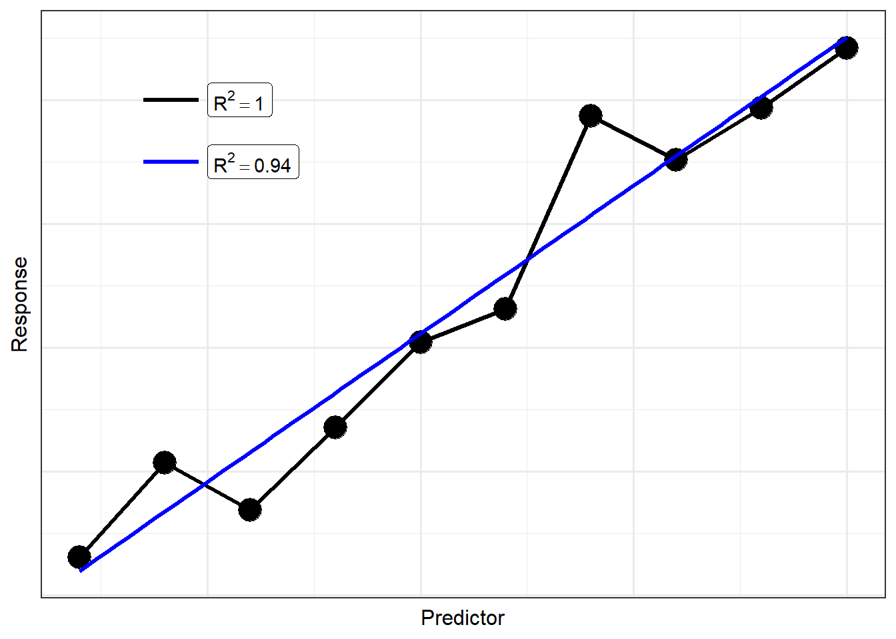
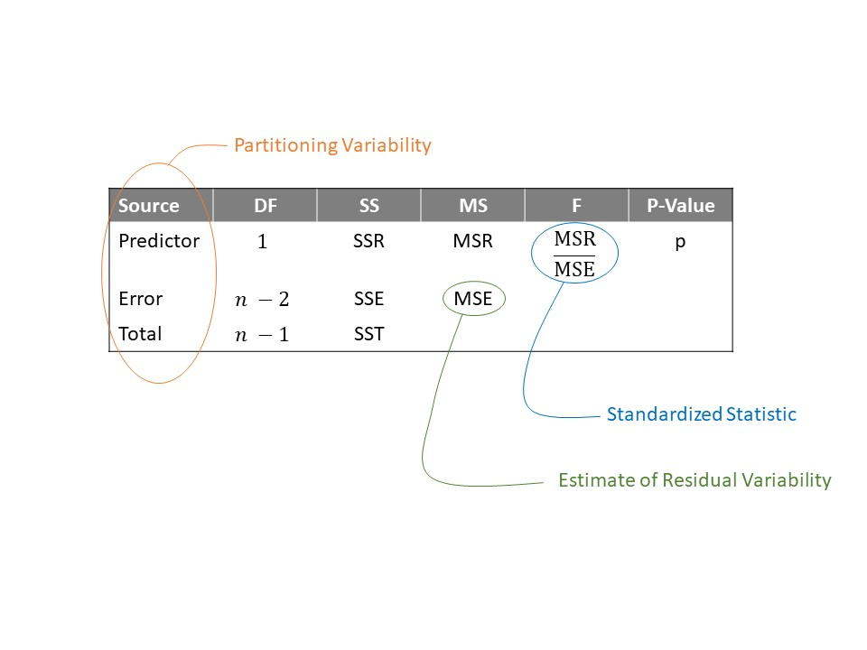

| Term | Estimate | Standard Error | Lower 95% CI | Upper 95% CI |
|---|---|---|---|---|
| (Intercept) | 4.462 | 0.726 | 3.024 | 5.899 |
| Epicentral Distance | 0.029 | 0.018 | -0.007 | 0.064 |
19 Quantifying the Quality of a Model Fit
In the previous two chapters, we described a model for describing the data generating process for a quantitative response as a function of a single quantitative predictor:
\[(\text{Response})_i = \beta_0 + \beta_1 (\text{Predictor})_i + \varepsilon_i\]
Chapter 17 discussed obtaining estimates of these unknown parameters using the method of least squares. Chapter 18 imposed conditions on the stochastic portion of the model in order to develop a confidence interval for each parameter. In this chapter, we turn to performing inference through the computation of a p-value for a set of hypotheses, and we discuss how to quantify the quality of our model with regard to its utility in making predictions. It turns out these two tasks are very much related and are accomplished through partitioning variability. We will describe what we mean by partitioning variability and how it is used to derive a measure for the overall performance of a model and to develop a standardized statistic for comparing two models. As with previous discussions, these ideas will form another thread of the story that continues throughout the text.
19.1 Partitioning Variability
Let’s return to the Seismic Activity Case Study first introduced in Chapter 13. Consider modeling the bracketed duration at a location as a function of the distance the location is from the center of the earthquake using the following model for the data generating process:
\[(\text{Bracketed Duration})_i = \beta_0 + \beta_1(\text{Epicentral Distance})_i + \varepsilon_i.\]
Using least squares to estimate the parameters, and assuming the data is consistent with the conditions for the classical regression model, the resulting model fit is summarized below in Table 19.1.
Remember, the goal of the model for the data generating process is to explain why the response is the value we see — we are essentially explaining why the values of the response differ from one individual unit to another (the variability in the response). Consider the model for the data generating process summarized above; it includes two reasons why the bracketed duration is not the same value at each measured location:
- The locations at which the observations are taken are different distances from the epicenter of each earthquake.
- Additional noise due to measurement error in the bracketed duration or additional natural sources we are unable to explain or did not account for in the model.
Looking at the form of the model for the data generating process, it may seem obvious that there are these two sources of variability — two sources for why the bracketed duration differs from one individual observation to another. Our next endeavor is to quantify the amount of variability in the response that can be attributed to each of these components. That is, we move forward with a goal of trying to say something like
\[\begin{pmatrix} \text{Total Variability} \\ \text{in the Bracketed Duration} \end{pmatrix} = \begin{pmatrix} \text{Variability due} \\ \text{to Distance} \end{pmatrix} + \begin{pmatrix} \text{Variability due} \\ \text{to Noise} \end{pmatrix}\]
As we have seen in both Chapter 5 and Chapter 12, variability can be quantified through considering the “total” distance the observations are from a common target (for example, the mean response) where “distance” is captured by squared deviations. That is, the total variability in bracketed duration can be measured by
\[\sum_{i=1}^{n} \left[(\text{Bracketed Duration})_i - (\text{Overall Mean Bracketed Duration})\right]^2. \tag{19.1}\]
Notice this quantity is related to, but not equivalent to, the sample variance. It measures the distance each response is from the sample mean and then adds these distances up. This is known as the Total Sum of Squares since it captures the total variability in the response.
Definition 19.1 (Total Sum of Squares) The Total Sum of Squares, abbreviated SST, is given by
\[SST = \sum_{i=1}^{n} \left[(\text{Response})_i - (\text{Overall Average Response})_i\right]^2\]
where the overall average response is the sample mean.
We now have a way of quantifying the total variability in the bracketed duration; we now want to partition (or separate) out this variability into its two components: the variability due to the epicentral distance, and the variability due to noise. In order to capture the variability due epicentral distance, we consider how epicentral distance plays a role in the model for the data generating process: it forms the line which dictates the mean response. That is, the linear portion in the model for the data generating process \(\beta_0 + \beta_1 (\text{Epicentral Distance})\) is the model’s attempt to explain how changes in the epicentral distance explain changes in the bracketed duration; further, this explanation comes in the form of the average response. That is, plugging into the deterministic portion of the model for the data generating process provides a mean response, and if we use the least squares estimates in place of the parameters, we are computing an estimate of the mean response. Finding the variability in the bracketed duration due to the epicentral distance is then equivalent to finding the variability in these estimated (or predicted) mean responses:
\[\sum_{i=1}^{n} \left[(\text{Predicted Bracketed Duration})_i - (\text{Overall Mean Bracketed Duration})\right]^2. \tag{19.2}\]
This is known as the Regression Sum of Squares as it captures the variability explained by the regression line.
Definition 19.2 (Regression Sum of Squares) The Regression Sum of Squares, abbreviated SSR, is given by
\[SSR = \sum_{i=1}^{n} \left[(\text{Predicted Mean Response})_i - (\text{Overall Mean Response})\right]^2\]
where the predicted mean response is computed using the least squares estimates and the overall mean response is the sample mean.
Finally, the unexplained noise, \(\varepsilon\) in our model for the data generating process, is the difference between the actual response and the deterministic portion of the model (in our case, the true regression line). This variability in the noise is then the variability in the bracketed duration where the average is conditional on the epicentral distance instead of ignoring it (which is what happens when we use the overall sample mean bracketed duration):
\[\sum_{i=1}^{n} \left[(\text{Bracketed Duration})_i - (\text{Predicted Bracketed Duration})_i\right]^2. \tag{19.3}\]
This is known as the Error Sum of Squares as it captures the variability not explained by the model but represented by the error term in the model.
Definition 19.3 (Error Sum of Squares) The Error Sum of Squares, abbreviated SSE and sometimes referred to as the Residual Sum of Squares, is given by
\[SSE = \sum_{i=1}^{n} \left[(\text{Response})_i - (\text{Predicted Mean Response})_i\right]^2\]
where the predicted mean response is computed using the least squares estimates.
With some clever algebra, it can be easily seen that the total variability does in fact partition into these two components. This discussion is represented in Figure 19.1.
Big Idea
The total variability in a response can be partitioned into two components: the variability explained by the predictor and the unexplained variability left in the error term. This is represented in the formula
\[SST = SSR + SSE\]

19.2 R-squared
The key to quantifying the quality of a model for the data generating process is to understand that a partition breaks a whole into smaller, distinct components. This means that if you put the components back together, you have the whole. The sums of squares partition the variability in the response into that explained by the deterministic portion of the model for the data generating process and that not explained. We represented this above by the equation
\[SST = SSR + SSE\].
The benefit partitioning variability is that it makes clear the breakdown between the variability in the response that the deterministic portion of the model is explaining (SSR) versus the variability in the response that cannot be explained (SSE). We are now in a position to quantify the proportion of the total variability the model is explaining, which is known as the R-squared value for the model.
Definition 19.4 (R-Squared) Sometimes reported as a percentage, the R-Squared value measures the proportion of the variability in the response explained by a model. It is given by
\[\text{R-squared} = \frac{SSR}{SST}.\]
For our model of the bracketed duration as a function of the epicentral distance, the R-squared value turns out to be 0.0216; that is, only 2.16% of the variability in the bracketed duration at a location is explained by its distance from the center of the corresponding earthquake.
As R-squared is a proportion, it must take a value between 0 and 1. If 0, that means our model has no predictive ability within our sample. That is, knowing the predictor does not add to our ability to predict the response any more than guessing. A value of 1 indicates that our model has predicted all the variability in the response; that is, given the predictor, we can perfectly predict the value of the response.
It may appear that obtaining an R-squared value of 1 should be our goal. And, in one sense, it is. We want a model that has strong predictive ability. However, there is a danger in obtaining an R-squared of 1 as well. We must remember that variability is inherent in any process. Therefore, we should never expect to fully explain all the variability in a response. George Box (a renowned statistician) once made the following statement (Box 1979):
“Now it would be very remarkable if any system existing in the real world could be exactly represented by any simple model. However, cunningly chosen parsimonious models often do provide remarkably useful approximations. For example, the law \(PV = RT\) relating pressure \(P\), volume \(V\) and temperature \(T\) of an ‘ideal’ gas via a constant \(R\) is not exactly true for any real gas, but it frequently provides a useful approximation and furthermore its structure is informative since it springs from a physical view of the behavior of gas molecules.
For such a model there is no need to ask the question ‘Is the model true?’. If ‘truth’ is to be the ‘whole truth’ the answer must be ‘No.’ The only question of interest is ‘Is the model illuminating and useful?’.
The idea here is that we know the model will not capture the data generating process precisely. Therefore, we should be skeptical of models which claim to be perfect. For example, consider the two models illustrated in Figure 19.2. The model represented by the black line has a perfect fit, but we argue the model represented by the blue line is better. While the black line captures all the variability in the response for this sample, it is certainly trying to do too much. In reality, the blue line captures the underlying relationship while not overcomplicating that relationship. We sacrifice a little quality in the fit for this sample in order to better represent the underlying structure of the population. The black line suffers from what is known as overfitting; the blue line is a more parsimonious (simple) model, balancing complexity with model fit.

Students often ask, “if not 1, how high of an R-squared represents a good model?” The answer depends a lot on the discipline. In many engineering applications within a lab setting, we can control much of the external variability leading to extremely high R-squared values (0.95 to 0.99). However, in biological applications, the variability among the population can be quite large, leading to much smaller R-squared values (0.3 to 0.6). What is considered “good” can depend on the specific application.
Warning
While R-squared is useful for quantifying the quality of a model on a set of data, it should not be used to compare two different models as R-squared always favors more complex models. There are better methods which adjust for the complexity of the model fit.
In addition to the discipline, how you view the R-squared value for a model may depend on the goal of the model. There are generally two broad reasons for developing a statistical model:
- Explain the relationship between a response and one or more predictors. This can involve examining the marginal relationship, isolating the effect, or examining the interplay between predictors.
- Predict a future response given a specific value for the predictors.
If all we are interested in doing is explaining the relationship, we may not be concerned about the predictive ability of the model. That is, since our goal is not to accurately predict a future response, we are primary concerned with whether we have evidence of a relationship. But, if our goal is prediction, we would like that estimate to be precise. In such cases, a high R-squared is required before really relying on the model we have.
What is perhaps counter-intuitive is that, while related, hypothesis testing and the R-squared value may not necessarily yield the same conclusions. That is, it is possible that we have a strong evidence that the average response depends on the predictor (small p-value) and simultaneously conclude that using the predictor would not result in precise predictions (low R-squared value).
19.3 Hypothesis Testing
In addition to quantifying the quality of the model, partitioning the variability in a response into two components is the basis for conducting a hypothesis test to compare two models. In this section, we expand upon the ideas initially presented in Chapter 12, broadening them to add to our unifying framework. Recall that hypothesis testing is really about comparing two models for the data generating process: a more complex model in which the parameters are free to take on any value, and a restricted model in which the parameters are constrained in some way.
When the sample does not provide enough evidence to suggest the more complex model is necessary to explain the variability in the response, we conclude it is reasonable the reduced model for the data generating process is appropriate (some say, we “fail to reject” the null hypothesis). When the sample does provide sufficient evidence to suggest we can discern the difference in the performance of the reduced and complex model, we say the simple model is not sufficient for explaining the variability in the response, and we prefer the more complex model (some say, we “reject” the null hypothesis). Throughout the remainder of this section, we will consider the following research question:
Is there evidence the average bracketed duration for a location following an earthquake is linearly related to the distance the location is from the center of the earthquake?
If we consider the simple linear model for the data generating process described above, this question can be captured using the following set of hypotheses:
\[H_0: \beta_1 = 0 \qquad \text{vs.} \qquad H_1: \beta_1 \neq 0.\]
Again, hypothesis testing is really model comparison; that is, these hypotheses are really suggesting two separate models for the data generating process:
\[ \begin{aligned} \text{Model 1}:& \quad (\text{Bracketed Duration})_i = \beta_0 + \beta_1 (\text{Epicentral Distance})_i + \varepsilon_i \\ \text{Model 0}:& \quad (\text{Bracketed Duration})_i = \beta_0 + \varepsilon_i. \end{aligned} \]
The model under the null hypothesis (Model 0) has fewer parameters because it is a constrained version of Model 1 resulting from setting \(\beta_1 = 0\). In fact, while Model 1 says that there are two components (the epicentral distance and noise) contributing to the variability observed in the bracketed duration, Model 0 says that there is only a single component (noise). So, we can think of our hypotheses as
\[ \begin{aligned} H_0: \text{Model 0 is sufficient for explaining the variability in the response} \\ H_1: \text{Model 0 is not sufficient for explaining the variability in the response.} \end{aligned} \]
Regardless of which model we choose, the total variability in the response remains the same. We are simply asking whether the variability explained by the predictor is sufficiently large for us to say it has an impact. In particular, if the null hypothesis were true, we would expect all the variability in the response to be channeled into the noise (\(SST \approx SSE\)). In fact, think about computing the error sum of squares for Model 0 above; it would be
\[SSE_0 = \sum_{i=1}^{n} \left[(\text{Bracketed Duration})_i - (\text{Overall Average Bracketed Duration})\right]^2\]
since the least squares estimate of \(\widehat{\beta}_0\) in Model 0 is the sample mean (see Appendix B). But, this is equivalent to the total sum of squares for Model 1 (Equation 19.1). This confirms our intuition that if the null hypothesis were true, we would expect all the variability in the response to be channeled into the noise (\(SST \approx SSE\)).
If, however, the alternative hypothesis is true and the epicentral distance explains some portion of the variability in the bracketed duration, then we would expect some of the variability to be channeled out of the noise term (\(SSR > 0\)). Because we have partitioned the variability, we now take a moment to recognize that
\[SSR = SST - SSE,\]
but we know that the total sum of squares is just the error sum of squares from the reduced model (Model 0) as shown above. Therefore, we can write
\[SSR = SSE_0 - SSE_1, \tag{19.4}\]
where we use the subscripts to denote whether we are discussing the error sum of squares from the reduced model (Model 0) or the full unconstrained model (Model 1). That is, Equation 19.4 reveals that the regression sum of squares is the equivalent of the shift in the error sum of squares as we move from the reduced model under the null hypothesis to the more complex model under the alternative hypothesis.
Big Idea
For a particular dataset, the regression sum of squares quantifies the shift in the error sum of squares as we move from a reduced model to a more complex model. It measures the “signal” in the data represented by the more complex model for the data generating process.
The regression sum of squares represents our signal. The larger the value, the more evidence we have that the data is not consistent with the null hypothesis. However, as we saw in Chapter 12, we should always examine our signal relative to the noise in the data. We already have a measure for the amount of variability due to noise — the error sum of squares! It then seems reasonable to consider the ratio
\[\frac{SSR}{SSE_1} = \frac{SST - SSE_1}{SSE_1} = \frac{SSE_0 - SSE_1}{SSE_1},\]
where again we have added subscripts to emphasize from which model we are computing the sums of squares. While this is a reasonable statistic, it is not yet standardized. Remember that sums of squares capture variability but are themselves not variances, and it turns out a ratio of variances is easier to model analytically. If we take a sum of squares and divide by an appropriate term, known as the degrees of freedom, we get a true variance term.
Definition 19.5 (Degrees of Freedom) A measure of the flexibility in a sum of squares term; when a sum of squares is divided by the corresponding degrees of freedom, the result is a variance term.
Rationale for Degrees of Freedom
Degrees of freedom are a very difficult concept to grasp, even for those who have been studying statistics for a while. Here is our way of thinking about them — they are the difference of available terms to work with. For example, think about the total sum of squares associated with a full unconstrained linear regression model described in Equation 17.3:
\[SST = \sum_{i=1}^{n} \left[(\text{Response})_i - (\text{Overall Average Response})\right]^2.\]
The first term of the difference has \(n\) different values (one response for each observation). However, the sample mean is just one value. Therefore, there are \(n - 1\) degrees of freedom associated with the total sum of squares. This is often described as starting out with \(n\) estimates (the data), but needing to estimate one parameter (the mean) along the way, leading to \(n - 1\).
Similarly, consider the regression sum of squares for the full unconstrained model:
\[SSR = \sum_{i=1}^{n} \left[(\text{Predicted Mean Response})_i - (\text{Overall Average Response})\right]^2.\]
While there are \(n\) predicted values, they are all generated from the same least squares fit \(\widehat{\beta}_0 + \widehat{\beta}_1 (\text{Predictor})_i\) which can be computed from two estimates (that for the intercept and slope). Therefore, we begin with only 2 unique values. Again, the sample mean has just one value, leading to \(2 - 1 = 1\) degree of freedom associated with the regression sum of squares.
Finally, consider the error sum of squares for the full unconstrained model:
\[SSE = \sum_{i=1}^{n} \left[(\text{Response})_i - (\text{Predicted Mean Response})_i\right]^2.\]
We have \(n\) initial values (one for each observation). However, as described above, we only need 2 terms to estimate the predicted values. So, we have \(n - 2\) degrees of freedom associated with the error sum of squares.
Note that just as the sums of squares formed a partition (\(SST = SSR + SSE\)), the corresponding degrees of freedom form a partition (\((n - 1) = (2 - 1) + (n - 2)\)).
Again, dividing a sum of squares by its associated degrees of freedom creates a variance term; this term is known as a mean square. It is important to note that both sums of squares and mean squares quantify the components of variability in the response, the component explained by the deterministic portion of the model and the component that is unexplained. However, they serve different purposes.
Definition 19.6 (Mean Square) A mean square is the ratio of a sum of squares and its corresponding degrees of freedom. For a model of the form in Equation 17.3, we have
- Mean Square Total (MST): estimated variance of the responses; this is the same as the sample variance of the response.
- Mean Square for Regression (MSR): estimated variance of the predicted responses.
- Mean Square Error (MSE): estimated variance of the error terms; this is equivalent to the estimated variance of the response for a given value of the predictor (the variance of the response about the regression line).
In each case, the mean square is an estimated variance.
Note
Sums of squares partition the variability of the response into smaller components; mean squares estimate the variance of those smaller components. While \(SST = SSR + SSE\), note that \(MST \neq MSR + MSE\).
Since mean squares are proportional to their corresponding sum of squares, an increase in the sum of squares is associated with an increase in the corresponding mean square. We are now ready to define our standardized statistic as the ratio of mean squares. Instead of the ratio
\[\frac{SSR}{SSE_1} = \frac{SST - SSE_1}{SSE_1} = \frac{SSE_0 - SSE_1}{SSE_1},\]
we replace the numerator and denominator with mean squares such that
\[\frac{MSR}{MSE} = \frac{\left(SST - SSE_1\right)/(2 - 1)}{SSE_1/(n - 2)} = \frac{\left(SSE_0 - SSE_1\right)/(2 - 1)}{SSE_1/(n - 2)},\]
where again we have added subscripts to emphasize from which model we are computing the sums of squares. This standardized statistic could be used to quantify the signal-to-noise ratio (the amount of evidence) in the sample for testing the hypotheses
\(H_0: \beta_1 = 0\)
\(H_1: \beta_1 \neq 0.\)
However, we can generalize this for testing a range of hypotheses within our model for the data generating process.
Definition 19.7 (Standardized Statistic for Simple Linear Regression) Consider testing a set of hypotheses for a model of the data generating process of the form (Equation 17.3):
\[(\text{Response})_i = \beta_0 + \beta_1(\text{Predictor})_i + \varepsilon_i.\]
Denote this model as Model 1, and denote the model that results from applying the parameter constraints defined under the null hypothesis as Model 01. A standardized statistic, sometimes called the “standardized F statistic,” for testing the hypotheses is given by
\[T^* = \frac{\left(SSE_0 - SSE_1\right) / (2 - r)}{SSE_1 / (n - 2)},\]
where \(r\) is the number of parameters in the reduced model. Defining
\[MSA = \frac{SSE_0 - SSE_1}{2 - r}\]
to be the “mean square for additional terms,” which captures the shift in the error sum of squares from the reduced model to the full unconstrained model, we can write the standardized statistic as
\[T^* = \frac{MSA}{MSE}\]
where the mean square error in the denominator comes from the full unconstrained model.
It can be shown that this standardized statistic is a generalization of the one introduced in Chapter 12. The numerator captures the signal by examining the difference between what we expect the error sum of squares to be under the null hypothesis and what we actually observe; the denominator captures the background noise (relative to the estimated mean response from the full model). Larger values of this standardized statistic indicate more evidence in the sample against the null hypothesis.
We should not lose sight of the fact that our standardized statistic is really a result of partitioning the variability and considering the variability explained by the predictor relative to the noise in the response. Underscoring that the standardized statistic is a result of this partitioning, the analyses of these sources of variability is often summarized in a table similar to that represented in Figure 19.3.

The last entry in the table is the p-value. As with any p-value, it is computed by finding the likelihood, assuming the null hypothesis is true, of obtaining a standardized statistic, by chance alone, as extreme or more so than that observed in our sample. “More extreme” values of the statistic would be larger values; so, the area to the right in the model for the null distribution is needed. The key step is modeling that null distribution. This is where the conditions we place on the error term that were discussed in Chapter 18 come into play. Under the classical regression conditions, we can model the null distribution analytically (see Appendix A); otherwise, we can rely on bootstrapping to model the null distribution.
Let’s return to our question that inspired our investigation:
Is there evidence the average bracketed duration for a location following an earthquake is linearly related to the distance the location is from the center of the earthquake?
This corresponds to testing the hypotheses
\[H_0: \beta_1 = 0 \qquad \text{vs.} \qquad H_1: \beta_1 \neq 0.\]
Table 19.2 gives the table summarizing the partitioned sources of variability in the bracketed duration. We have a large p-value (computed assuming the data is consistent with the classical regression model). That is, the sample provides no evidence to suggest that locations further from the center of the earthquake experience a bracketed duration which differs, on average, from those closer to the center of the earthquake.
| Term | DF | Sum of Squares | Mean Square | Standardized Statistic | P-Value |
|---|---|---|---|---|---|
| Epicentral Distance | 1 | 85.733 | 85.733 | 2.583 | 0.111 |
| Error | 117 | 3883.708 | 33.194 |
Big Idea
Determining if a response is linearly related to a predictor is done by determining if the predictor explains a significant portion of the variability in the response.
In this section, we partitioned variability as a way of evaluating the strength of evidence the predictor plays in determining the response. In the previous section, we used that same partition to quantify the predictive ability of the model for the data generating process. Regardless of our goal, conducting inference or predicting a future response, partitioning the variability is a key step. If inference is our primary aim, this partitioning allows us to determine if a predictor adds to the model above and beyond the error alone. If prediction is our primary aim, the partitioning allows us to quantify the quality of the model’s predictive ability.
Technically, this standardized statistic only applies to a class of potential hypotheses, but that class is quite broad (see Appendix B).↩︎